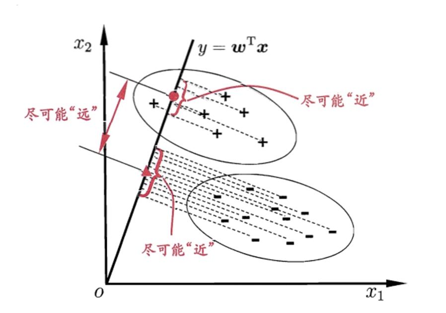
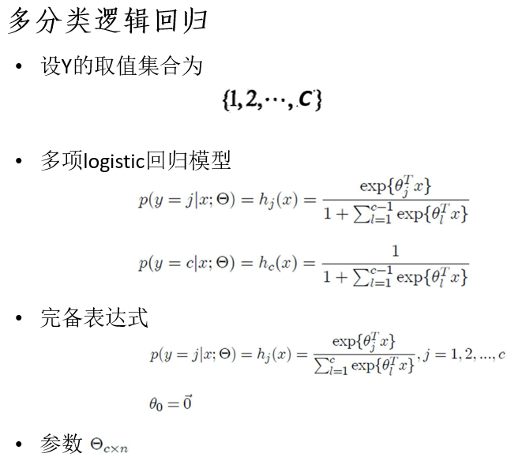
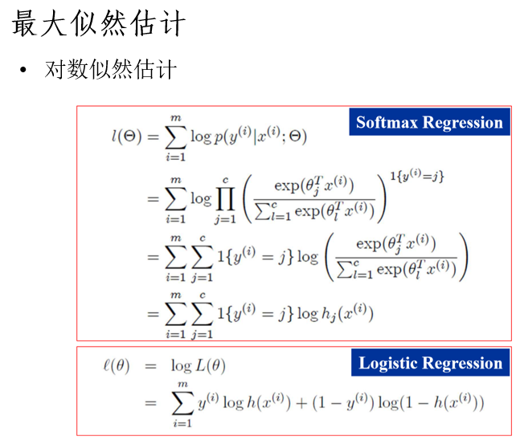

机器学习课堂笔记
本文记录在本学期《机器学习及其应用课》上一些印象比较深刻的知识点；大部分在课堂PPT或者相关书籍（周志华《机器学习》，李航《统计学习方法》）上很容易理解的点就不在此赘述了；
笔者水平有限，如果有错误清多多指正；
模型的评估与选择
泛化误差的分解
泛化误差是模型对位置数据预测的误差： $$ \[\begin{aligned} R_\text{exp}(\hat f)&=E_P[L(Y, \hat f(X))]\\ &=\int_{\mathcal{X}\times\mathcal{Y}}L(y, \hat f(x))P(x, y)dxdy \end{aligned}\]$$
首先要明确的一点是，泛化误差\(\ne\)某个测试集误差，后者只是前者的一次估计，前者是后者所在分布的期望，测试集的选择、推理过程的随机性都会得到不同的结果。应当使用统计学中的假设检验方法比较两个模型的好坏。
但是笔者目前看到几乎所有的论文都是，在测试集甚至验证集上，有更好的性能，就SOTA了？
泛化误差是一个理论上的误差，如果能描述清楚其上下界，则对实验有一定的指导意义：泛化误差的下界决定了在一个任务上最理想能刷到多少点，是收到数据集的限制的；泛化误差的上界反映了模型本身是否容易学习，一般认为，泛化误差上界越小的模型越好，然而对于简单的线性模型，我们也许可以给出上界，但是对于现在的各种复杂的非线性的、深层的模型，给出泛化误差上界仍然是很难的问题。
下面是对泛化误差的分解：
记测试样本为\(x\)，\(y_D\)与\(y\)分别为样本在数据集中的标记和样本真实标记，\(f(x;D)\)为训练集\(D\)上学习的模型对于\(x\)的预测标签（以下简记为\(f\)），定义对于测试样本中预测的方差为\(var(x)=E_D[(f(x;D)-\overline f(x))^2]\)（以下简记为\(E[(f-Ef)^2]\)），定义噪声为\(\epsilon^2=E_D[(y_D-y)^2]\)，定义偏差为\(bias^2(x)=(\hat f(x)- y)^2\);
\(y_D\)和\(y\)的区别，是数据标注时引入的误差，由标注员本身认知的偏置和偶然的错误组成；\(f\)和\(Ef\)的区别，即由于训练集变动等原因，导致模型对同一个样本的预测不总是相同；
下面的\(L\)直接使用均方误差：
\[ \begin{aligned} E(f;D) &= E[(f(x;D)-y_D)^2]\\ &= E[(f - Ef + Ef - y_D)^2]\\ &= E[(f-Ef)^2]+E[(Ef-y_D)^2]+2E[f\cdot Ef + y_DEf - y_Df - E_f^2]\\ &= E[(f-Ef)^2]+E[(E_f-y + y-y_D)^2]\\ &= E[(f-Ef)^2]+E[(E_f-y)^2]+E[(y-y_D)^2+E[(E_f-y)(y-y_D)]\\ &= var(x) + bias^2(x) + \epsilon^2 \end{aligned} \]
上述推导用到的知识有：
\(E(aX+bY)=aEX+bEY\)，其中\(a, b\)是常数，\(X,Y\)是随机变量；特殊地\(E(a)=a\)；
\(E(XY)=E(X)E(Y)\)，当且仅当\(X,Y\)是相互独立的随机变量；
需要的假设有：
噪声期望为0，即\(E(y_D-y)=0\)，这是假设了数据集的标注没有系统误差而都是随机误差，比较合理；则可以推出\(\text{Var}[(y_D-y)]=E[(y_D-y)]^2=\epsilon^2\)；
偏差与噪声无关；
VC维
以下定义来自机器之心 - VC维度
VC维是衡量可以通过统计分类算法学习的函数空间的容量的度量。定义为算法可以破碎(shatter)的最大点集的基数。shatter的含义为，对于一个假设空间\(\mathcal H\)（函数的集合），如果存在\(m\)个数据样本能够被假设空间中的函数按照所有可能的\(2^n\)种方式分开（每个样本有两种类别可能），则称\(\mathcal H\)能够把\(m\)个数据样本破碎开。
e.g. 线性模型的VC维为3，因为3个点线性可分而4个点的xor情况线性不可分。
泛化误差上界
在推导特定问题的泛化误差上界之前，我们定性地描述泛化误差上界：
- 样本容量越大，泛化误差上界趋于0；
- 假设空间容量越大，泛化误差上界越大；
考虑二分类问题，样本容量为\(N\)，训练数据集\(T\)是从联合概率分布\(P(X,Y)\)独立同分布产生的，假设空间是函数的有限集合\(\mathcal F = \{f_1, \cdots, f_d\}\)，损失函数为0-1损失，则期望风险（\(L(Y, F(X))\)期望值）和经验风险（\(L(Y, F(X))\)样本均值）分别为： \[ R(f)=E[L(Y,f(X))] \]
\[ \hat R(f) = \frac 1 N \sum_{i=1}^N L(y_i, f(x_i)) \]
经验风险最小化函数为 \[ f_N = \arg\min_{f\in\mathcal F}\hat R(f) \] 我们关心\(f_N\)的泛化能力： \[ R(f_N)=E[L(Y,f_N(X))] \] 对于任意一个\(f\)，至少以概率\(1-\delta, ~ 0<\delta<1\)，以下不等式成立： \[ R(f) \le \hat R(f) + \sqrt{\frac {1}{2N} (\log d+\log\frac 1 \delta)} \]
具体证明见： 李航《统计学习方法》。
向量、矩阵、张量的导数
理解矢量导数，最朴素的方式，就是把矢量计算拆成多个并行的标量计算；
以下内容来自cs231n的参考资料，用粗体字母表示向量，用大写字母表示矩阵，一般的小写字母表示标量；
向量对向量求导
设\(\mathbf{y}\)是长度为\(C\)列向量，\(W\)是\(C\times D\)矩阵，\(\mathbf x\)是长度为\(D\)列向量，有\(\mathbf y = W\mathbf x\)，简单的排列组合知识告诉我们，\(\frac{\partial\mathbf y}{\partial \mathbf x}\)有\(C\times D\)项（二维矩阵）；不妨以\(\mathbf y\)的第3个元素对\(\mathbf x\)的第7个元素为例： \[ \begin{aligned} \frac{\partial y_3}{\partial x_7} &= \frac{\partial}{\partial x_7}(W_{3,1}x_1+\cdots+W_{3,7}x_7+\cdots+W_{3,D}x_D)\\ &=W_{3,7} \end{aligned} \] 推广到其他位置，不难得出结论，\(\frac{\partial\mathbf y}{\partial \mathbf x}\)恰好就是\(W\)
如果\(\mathbf y\)与\(\mathbf x\)都是行向量且\(\mathbf y = \mathbf x W\)，同样有\(\frac{\partial\mathbf y}{\partial \mathbf x}=W\)
向量对矩阵求导
与上一小节条件相同，直观地看，\(\frac{\partial\mathbf y}{\partial W}\)应该是一个\(C\times C\times D\)的张量，设\(W=[\mathbf w_1, \cdots, \mathbf w_D]\)，\(\mathbf y = W\mathbf x\)也可以理解为\(\mathbf y\)是\(W\)各列以\(\mathbf x\)中对应元素为权重的加权和，即 \[ \mathbf y = x_1\mathbf w_1 + \cdots + x_D \mathbf w_D \] 特殊的，我们可以得到 \[ \frac{\partial y_3}{\partial W_{3,7}} = \frac{\partial}{\partial W_{3,7}}(x_1W_{3,1} +\cdots + x_7W_{3,7} + \cdots + x_DW_{3,D}) = x_7 \]
\[ \frac{\partial y_3}{\partial W_{2,7}} = \frac{\partial}{\partial W_{2,7}}(x_1W_{3,1} +\cdots + x_7W_{3,7} + \cdots + x_DW_{3,D}) = 0 \]
推广后，我们发现，对于\(\frac{\partial\mathbf y_i}{\partial W_{j,k}}\)，仅仅在\(i=j\)时不为零，且\[\frac{\partial\mathbf y_i}{\partial W_{i,k}}=x_k\]，这样，我们可以将结果的3D张量表示成一个更紧凑的2D矩阵，形状为\(C\times D\)，（\(C\)个\(\mathbf x\)拼接）： \[ \frac{\partial\mathbf y}{\partial W} = \mathbf x \mathbf 1^T \]
当然，结果还可以继续“紧凑”成向量\(\mathbf x\)，这里我们有意让\(\frac{\partial}{\partial W}\)的形状与\(W\)相同，是利于理解反向传播过程中参数的更新，当然，利用numpy/pytorch的广播机制，只需要保存一个向量即可；
矩阵对矩阵求导
将先前定义的\(\mathbf y\)和\(\mathbf x\)分别扩展成矩阵\(Y\in \mathbb R^{C\times N}\)，\(X\in \mathbb R^{D\times N}\)，\(Y=WX\)；这种扩展，可以理解为使用了\(N\)个数据，对于\(i = 1, \cdots, N\)，有\(\mathbf y_i = W \mathbf x_i\)；
使用先前的结论，有 \[ \frac{\partial Y_{.,i}}{\partial X_{.,i}} = \frac{\partial \mathbf y_i}{\partial \mathbf x_i} = \frac{\partial}{\partial \mathbf x_i}W\mathbf x_i = W \]
\[ \frac{\partial Y_{.,i}}{\partial X_{.,j}} = \frac{\partial \mathbf y_i}{\partial \mathbf x_j} = \frac{\partial}{\partial \mathbf x_j}W\mathbf x_i = 0 \]
将矩阵乘法展开成标量乘积之和形式，还可以得到\(\frac{\partial Y_{a,b}}{\partial X_{c,d}}\)在\(a\ne c\)时也为0，因此紧凑地表示\(\frac{\partial Y}{\partial X}\)，可以将4D张量缩减为2D矩阵，也就是\(W\)；
类似的，\(\frac{\partial Y}{\partial W} = X\)；
这个结果，在形式上，又与标量求导相同，只不过我们需要清楚，这些都是“紧凑”后的形式；
线性模型
线性判别分析
核心思想：将高维空间的样本投影到一条直线上，使得同类样本尽可能近，异类样本尽可能远；
如何表示投影
如何表示投影？在线性代数要点总结的“正交投影”一节，给出了将\(\mathbb{R}^n\)中的向量\(y\)投影到子空间\(W\)后的数学表示，设\(U=[u_1,\cdots, u_p]\)为该子空间的单位正交基，则 \[ \text{proj}_Wy=UU^Ty \] 在西瓜书上的图解是一个最简单的情况，原空间是\(\mathbb R^2\)，投影子空间是其中的一条直线（1维子空间），其单位正交基应该只有一个向量，即该直线的单位向量\(\omega\)，按照上述公式，投影后的点坐标应该是\(\omega\omega^Tx\)，为什么后续却适用了\(\omega^Tx\)这一表示呢？

直观地看，在上图中，\(\omega\omega^Tx\)仍然保持了与\(x\)相同的形状，而\(\omega^Tx\)是一个标量；向量空间\(\mathbb R^n\)的子空间\(W\)有\(p\)个线性无关的基，即子空间是\(p\)维的，但每个基的元素个数为\(n\)，即子空间的域仍然是\(p\)，即在线代中介绍的投影运算，在投影前后不改变域，而在这里介绍的“投影”，希望得到的是与该子空间同构的\(\mathbb R^p\)上的结果，而线性判别分析的限制更强，即\(p=1\)；
回想投影公式的推导过程，\(U^Ty\)是\(p\)个正交的单位向量与\(y\)的点积结果，表示\(y\)投影到子空间各个方向上的长度是多少，之后再左乘\(U\)是为了得到投影点在\(\mathbb{R}^n\)中的坐标；
现在我们只需要知道在1维子空间的唯一基方向的长度\(y=\omega^Tx\)，用于分类，更准确的说，我们只要得到不同的\(x\)，投影后向相对长度，因此\(\omega\)不必要是一个方向向量，不同的\(\omega\)只会使得所有投影结果乘上不同的比例因子罢了；
如何设计目标函数
首先定义一些接下来会用到的符号，总样本集合\(X\)包含\(N\)个\(d\)维样本\(x\)，即\(X\)是\(d\times N\)的矩阵，记类别数为\(K=2\)，第\(i\)类样本的集合为\(X_i\)，基数为\(N_i\)，均值为\(m_i\)，协方差为\(\Sigma_i\)；投影后的均值为\(\omega m_i\)，协方差矩阵\(\omega^T\Sigma\omega\)；（这里投影后的协方差矩阵是1x1的，因此可以视为一个标量）
有关协方差和投影后协方差矩阵的形式，可见线性代数要点总结的主成分分析一节；
希望类间距离越大，可以写成样本中心距离越大；希望类内距离越小，可以写成协方差越小，则目标函数（最大化）为： \[ \begin{aligned} J &= \frac{||\omega^Tm_0 - \omega^T m_1||_2^2}{\omega^T\Sigma_0\omega + \omega^T\Sigma_1\omega}\\ &= \frac{\omega^T(m_0 - m_1)(m_0 - m_1)^T\omega}{\omega^T(\Sigma_0+\Sigma_1)\omega}\\ \end{aligned} \] 把分子分母中做个变量代换，定义：
类间散度矩阵为\(S_b\)，\(d\times d\) \[ S_b = (m_0-m_1)(m_0-m_1)^T \] 分母上 \[ \begin{aligned} \Sigma_0 +\Sigma_1 &= \frac{1}{N_0-1}(X_0-m_0\mathbf 1)(X_0-m_0\mathbf 1)^T + \frac{1}{N_1-1}(X_1-m_1\mathbf 1)(X_1-m_1\mathbf 1)^T\\ &= \frac{1}{N_0-1}\sum_{x\in X_0}(x-m_0)(x-m_0)^T + \frac{1}{N_1-1}\sum_{x\in X_1}(x-m_1)(x-m_1)^T \end{aligned} \] 而在定义类内散度矩阵\(S_w\)，\(d\times d\)时， 抛去了归一化项： \[ S_w = \sum_{x\in X_0}(x-m_0)(x-m_0)^T + \sum_{x\in X_1}(x-m_1)(x-m_1)^T \] 上述目标函数重写为： \[ J = \frac{\omega^TS_b\omega}{\omega^TS_w\omega} \]
抛去了归一化项会有什么影响吗？直观地，正负样本的数量不同时，会有差距，不做归一化会使得\(S_w\)偏向样本多得那一方。可是求平均同样会放大样本较少类别中离群点的影响。对于类别不均衡问题，LDA算法本身没有考虑，但是后续可以通过难样本挖掘等采样策略来训练等等；
如何优化
如何求解使\(J\)最大的\(\omega\)？分子分母都是关于\(\omega\)的二次型；由于我们只需要\(\omega\)的方向，因此可以让分母为非零常数\(c\)，分子最大化；
为了便于理解，在上图中原始空间为\(\mathbb {R}^2\)的情况下，记\(\omega = (\omega_1, \omega_2)\)，\(J\)也就是这样的一个目标函数： \[ J = \frac{a\omega_1^2+b\omega_2^2+c\omega_1\omega_2}{d\omega_1^2+e\omega_2^2+f\omega_1\omega_2} \]
\[ \begin{matrix} \min_w &-\omega S_b\omega\\ \text{s.t.}&\omega^TS_w\omega = c \end{matrix} \]
对应的拉格朗日函数为： \[ L(\omega, \lambda) = \omega^T S_b\omega - \lambda(\omega^TS_w\omega - c) \] 对\(\omega\)求导并令导数为0，得到 \[ S_b\omega = \lambda S_w\omega \] LDA假设样本的协方差矩阵是满秩的，因此有\(S_w\)非奇异，则 \[ S_w^{-1}S_b\omega = \lambda \omega \]
在Fisher判别分析中，没有协方差矩阵满秩的假设，因此\(S_w^{-1}\)可以使用求伪逆的方法；
转化为求解\(S_\omega^{-1}S_b\)的特征向量的问题；但是，又观察到\((m_0-m_1)^T\omega\)是标量，则\(S_b\omega\)始终与\((m_0-m_1)\)同方向： \[ S_b\omega = (m_0-m_1)(m_0-m_1)^T\omega = \lambda'(m_0-m_1) \] 因此 \[ \omega = \frac{\lambda}{\lambda'}S_w^{-1}(m_0-m_1) \] 比例因子\(\lambda / \lambda'\)可以忽略，因为我们只在意方向；
如何分类
对于二分类问题，在投影到1维直线上之后，我们需要确定一个阈值来在推理时区分正负类别，最简单的，可以使用投影后的样本中心的均值作为阈值；
如何扩展到多分类
观察上述过程，扩展到多分类，仍要满足类内距离小，那么\(S_w\)的定义只要由两类协方差矩阵之和扩展成多类协方差矩阵之和即可； \[ S_w = \sum_{i=1}^{K}\sum_{x\in X_i}(x-m_i)(x-m_i)^T \]
仍要满足类间距离大，那么\(S_b\)的定义该如何扩展？
先定义一个全局散度矩阵\(S_t\)，\(m\)表示所有样本的均值： \[ S_t = \sum_{i=1}^{K}\sum_{x\in X_i}(x-m)(x-m)^T \] 令\(S_b = S_t - S_w\)，则有类间样本均值：
\[ \begin{aligned} (x-m)(x-m)^T - (x-m_i)(x-m_i)^T &=(x-m)(x^T-m^T) - (x-m_i)(x^T-m_i^T)\\ &=-mx^T-xm^T+mm^T+m_ix^T+xm_i^T-m_im_i^T\\ \sum_{x\in X_i}(-mx^T-xm^T-mm^T+m_ix^T+xm_i^T-m_im_i^T) &= N_i(mm^T-m_i^Tm_i^T)+(m_i-m)N_im_i^T + N_im_i(m_i^T-m^T)\\ &= N_i(mm^T + m_i^Tm_i^T - mm_i^T - m_im^T)\\ &= N_i(m_i - m)(m_i - m)^T \end{aligned} \]
\[ S_b = \sum_{i=1}^{K}N_i(m_i-m)(m_i-m)^T \]
扩展到多分类的另一个问题在于，投影到1维直线上已经不太合适了，\(d\times 1\)的投影向量\(\omega\)扩展为\(d\times (K-1)\)的投影矩阵\(W\)，但是这样一来，目标函数的分子分母都不再是标量而是矩阵，可以改成求矩阵的迹
协方差矩阵的迹是总方差
\[ \max_{W}\frac{\text{tr}(W^TS_bW)}{\text{tr}(W^tS_wW)} \]
上述问题的解与之前有相同形式（笔者目前还不能给出推导过程）： \[ S_bW = \lambda S_w W \] 问题同样转化为求\(S_w^{-1}S_b\)的前\(d'\)个最大广义非零特征值对应的特征向量，\(d' \le (K - 1)\)；
在推理时，设\(y=Wx\)是测试样本在投影空间的表示，计算\(y\)到哪个投影后的类别中心\(Wm_i\)最近，决定了\(x\)属于哪个类别；
为什么\(K\)分类投影到\(K-1\)的超平面？还是别的维度也可以？
不存在什么限制要求必须投影到$K-1维超平面
扩展到降维
上面在多分类的扩展中，我们看到了LDA可以作为监督降维技术，并且这种投影过程使用了类别信息；
逻辑斯蒂回归/对数几率回归
一句话描述逻辑斯蒂回归，就是在线性回归层之后使用了sigmoid函数，并设置阈值完成二分类预测，相比于直接用线性模型+阈值做分类，能够一定程度减少离群点的影响；
如何优化逻辑斯蒂回归模型的参数？我想起来在吴恩达老师的机器学习入门课中，给了一个新手友好的解释：
线性回归模型 + MSE损失，和逻辑回归模型 + BCE损失，求导后损失函数对\(\theta\)的梯度形式均为Error * Feature
逻辑回归模型为什么引入CE？又为什么不用MSE？吴恩达老师只是简单提到了最大似然估计和非凸函数，没有给当时还是新手的我讲太多；下面笔者记录一下，是怎样得到BCE损失函数的？
从统计意义解释
决策边界：使得模型输出=分类阈值的所有输入的集合，设输入特征是\(\mathbb R^d\)中的向量，则决策边界是\(d-1\)维的超平面；对于逻辑回归，其决策边界是线性的；
如果阈值为0.5，那么超平面即\(wx+b=0\)，将偏置项"吸入"，也就是\(wx=0\)
使用sigmoid激活之后，模型的输出可以视为一种后验概率： \[ \begin{aligned} P(Y=1|X) &= \frac{e^{wx}}{1+e^{wx}} &= p\\ P(Y=0|X) &= \frac{1}{1+e^{wx}} &= 1 - p\\ \end{aligned} \] 定义事件的几率为发生与不发生的比率，对数几率即几率取对数，那么逻辑斯蒂回归模型的对数几率，即为线性函数的输出： \[ \log\frac{P(Y=1|X)}{P(Y=0|X)} = wx \] 也就是说，虽然披着“分类”的外皮，但是我们还是在做一个回归任务，只不过，回归的目标是“对数几率”；
设输入数据为\(\{x_i, y_i\}_{i=1}^m\)，\(y_i\)为0或1，则对数似然函数为 \[ l(w) = \sum_{i=1}^m\log p(y_i|x_i; w) \] 按照似然函数的定义，其中： \[ p(y_i|x_i;w) = p_i^{y_i}(1-p_i)^{1-y_i} \] 则 \[ \begin{aligned} l(w) &= \sum_{i=1}^{m}[y_i\log p_i + (1-y_i)\log(1-p_i)]\\ &= \sum_{i=1}^{m}[y_i\log\frac{p_i}{1-p_i} + \log(1-p_i)]\\ &= \sum_{i=1}^{m}[y_i(wx_i)-\log(1+e^{wx})] \end{aligned} \] 上式的第一行也就是常见的BCE损失的表现形式，求\(\frac{\partial l}{\partial w}\)即我们熟悉的Error * Feature形式；
扩展到多分类
同样的，写出对数似然函数，仍然能够得到CE损失的形式：


这里有一份softmax+CE loss的求导过程；